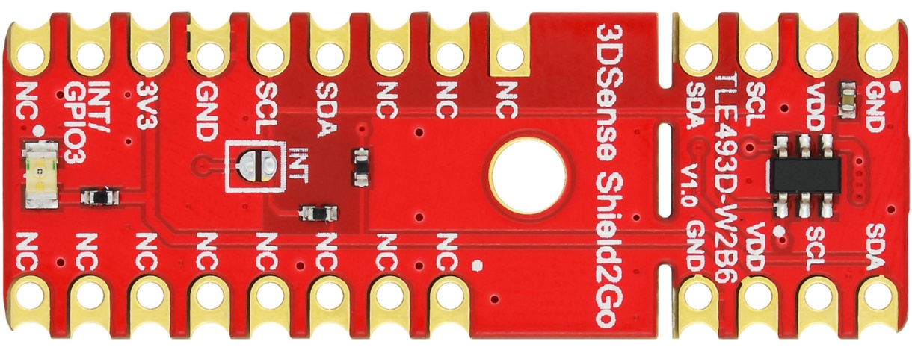
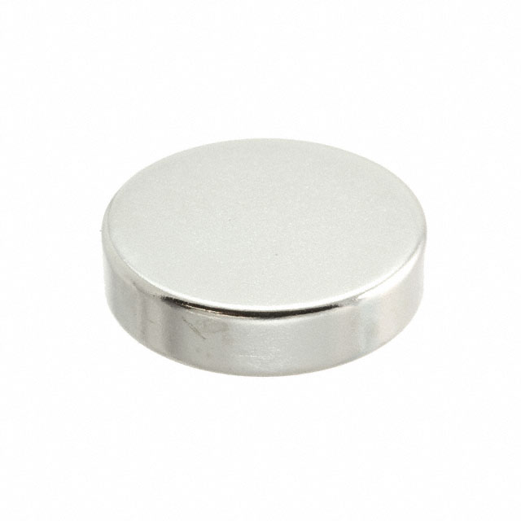
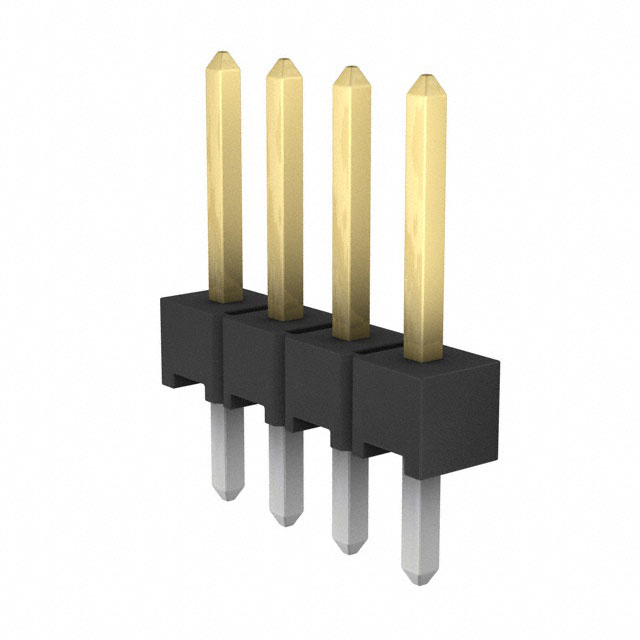
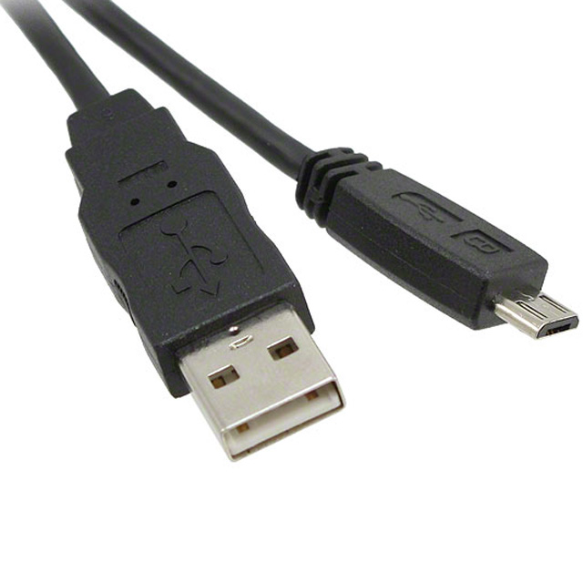
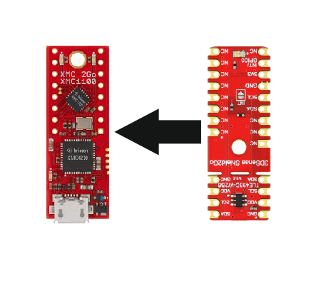

Quickstart Guide¶
In this quick tutorial we will go through one of the XENSIV™ 3D Magnetic Sensors TLx493D library examples, which is available for all the sensors supported by this Arduino library. We will use the XMC 2Go as microcontroller, but you can choose any of the supported platforms in order to get this example working.
Required Hardware¶
Name |
Picture |
|---|---|
|  | |
XMC 2Go (only needed if you chose a shield 2Go) |

|
Magnet (diametrically magnetized) |
 |
Pin headers (8 pins, male and female) |
 |
Micro-USB to USB-A cable |
 |
{kind=link}
Required Software¶
Software Installation¶
Install the Arduino IDE
If you are new to Arduino, please download the program and install it first.
Install the XMC Boards
The official Arduino boards are already available in the Arduino IDE, but other third party boards, like the Infineon MCUs, need to be explicitly included in order to use them. Follow the instructions in the link to add the XMC MCU family to the Arduino IDE. Do not forget to install the the J-Link-Software as well. The steps to install the J-Link-Software are also provided in the link.
Install the library
In the Arduino IDE, go to the menu Sketch > Include Library > Library Manager. Type XENSIV 3D Magnetic Sensor TLx493D and install the library. Click on install and wait for the library to be installed.
{kind=link}
Hardware Setup¶
For this example we will use the I2C interface of the MCU. In order to connect the sensor properly to the XMC 2Go you have to solder pins to the XMC 2Go as well as to the XENSIV™ 3D Magnetic Sensor TLE493D-W2B6. For the XMC 2Go you need female pin headers and for the sensor you need male pin headers. If the soldering is done we can stack the XENSIV™ 3D Magnetic Sensor TLE493D-W2B6 on top of the XMC 2Go. Please look at the picture below in order to plug the sensor correctly into the XMC 2Go.
{kind=link}
Here is another picture how the complete setup should look like.
If that is done you just have to connect the USB-cable to the XMC 2Go as well as to the computer and get ready to use your magnet.
Ready To Go!¶
With everything prepared we’re ready to flash the first library example to the microcontroller. In order to do that you have to do the following steps in the Arduino IDE:
Select the right board
Once you have installed the XMC board family, you can select one of the supported boards from the menu: Tools > Board > Infineon’s XMC Microcontroller. Or you can select the board in the drop down menu, if you’re using the new Arduino IDE. Here, you have to click on Select other board and port…. In our case we have to choose the XMC1100 XMC2Go in order to select the correct board. Depending on which XMC-for-Arduino version you have installed the selection in the board menu can look a bit different.
Open the example
With the library installed in the Arduino IDE you can simply open one of the examples that are part of the library. To do that you have to go to the menu: File > Examples > xensiv-3d-magnetic-sensor-tlx493d and choose the example read_iic_sensor.
Build and run the example
Please make sure that you have chosen the right COM-port. You can choose it from the menu: Tool > Port or again from the drop down menu (new Arduino IDE). If you’re not sure that you have selected the correct COM-port you can do a simple trick. Just remove the USB-Cable from your computer and check all the available COM-ports. With that done connect the board again and check the available COM-ports again. There should be a new one now that has not been there before, this port is the right one to choose.
Now we can use the verify button  to check if the code is correct and compiles without errors. If the compilation passes you can upload the sketch via the upload button
to check if the code is correct and compiles without errors. If the compilation passes you can upload the sketch via the upload button  to the XMC 2Go.
to the XMC 2Go.
After the upload is complete open the serial monitor with the serial monitor button  . If you just see a bunch of strange symbols, you probably forgot to choose the correct baudrate for the serial terminal. You can find the needed baudrate inside the Serial.begin() function call of the Arduino-Sketch. If everything is correctly set, you should see the magnetic values of the measured magnetic field in X, Y, Z-direction, as well as the temperature on the serial monitor.
. If you just see a bunch of strange symbols, you probably forgot to choose the correct baudrate for the serial terminal. You can find the needed baudrate inside the Serial.begin() function call of the Arduino-Sketch. If everything is correctly set, you should see the magnetic values of the measured magnetic field in X, Y, Z-direction, as well as the temperature on the serial monitor.
What’s next?¶
This was only one of the available library examples. The other examples will show much more of the sensor’s available functionality. If you need more details about the library functions check out the `API reference section <>`_ of this documentation.